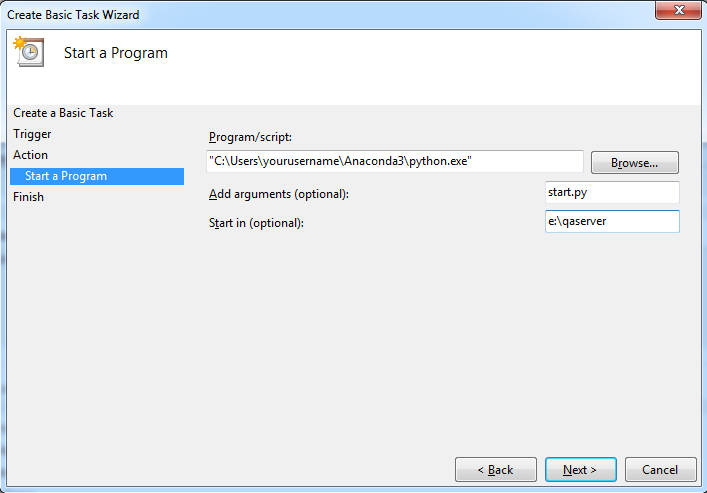

Installation¶
QAserver is designed to work with Orthanc and its RESTful interface. It will not work without it.
Follow this instructions to properly install QAserver. I suggest that you reserve a computer for QAserver that is connected to your hospital (local) network. There are no special requirements, a normal desktop computer should be sufficient.
Warning
Do not make QAserver available to the public domain. QAserver does not implement any safety features, so by making QAserver public you are at risk of exposing your data.
QAserver cannot be installed as a Python package. A special procedure must be followed. Each version of QAserver is compatible only with specific versions of dependent software, so you must pay attention to the version of software you install within your Python environment.
Version 1.0 compatibility¶
The table below gives the versions of three dependencies that must be observed. More recent versions of dependencies, especially Pylinac and Bokeh, will not work with QAserver.
Software |
Version |
|---|---|
Python |
>= 3.7 |
Pylinac |
2.2.6 or 2.2.7 |
bokeh |
1.3.4 |
Here is a list of version of other dependencies that were used during development:
Software |
Version |
|---|---|
Bottle |
0.12.17 |
json |
2.0.9 |
json |
2.0.9 |
sqlite3 |
2.6.0 |
numpy |
1.16.5 |
scipy |
1.3.1 |
matplotlib |
3.1.1 |
scikit-image |
0.15.0 |
scikit-learn |
0.21.3 |
pydicom |
1.3.0 |
httplib2 |
0.14.0 |
prettytable |
0.7.2 |
Instaling Anaconda¶
Download the latest Anaconda. The version I am using in this user manual is Anaconda3 2019.10.
When you install Anaconda, chose to add Anaconda to your PATH environment variable. If you chose not to, then you may have problems running the servers with Windows Task Scheduler.
After you install Anaconda, you can either use the “base” environment, or make a new environment for QAserver. The instructions that follow cover both ways of doing the installation. Making a special environment is necessary if you are using much more recent versions of Anaconda/Python, but need to install older versions of dependencies.
Download QAserver¶
Download QAserver archive from:
Unzip it into a special directory. Give it the name “qaserver”. After that open Command Prompt or Anaconda Prompt with Administrator privileges, and go to that folder and try to start the server with
python start.py
You should get import errors. The first one will probably be a missing “bottle” module. So basically, what you need to do is install all the missing packages until the server starts without giving errors. As said before, you have two options: installing packages in the base environment or create a special environment for QAserver.
Installing missing packages in the base environment¶
Warning
Using pip to install certain packages may destroy your python distribution, so follow this to install everything correctly. Pay attention to when conda is used instead of pip.
Start Anaconda Prompt with Admin privileges. Your base environment should be active by default.
- Install bottle with
pip install bottle
- Install httplib2 with
pip install httplib2
- Install pylinac with
pip install pylinac==2.2.7
- Reinstall bokeh with
pip install bokeh==1.3.4
- Install paste with
pip install paste
- Install prettytable with
pip install prettytable
Now you should be able to start the server with python start.py. Some additional steps are necessary to fix a couple of Pylinac’s modules.
Installing missing packages in a new environment¶
Open Anaconda Prompt with Admin privileges and type this to create an environment called “qaserver” with a specific version of Python:
conda create -n qaserver python=3.7
Then active this environment with
activate qaserver
Within the new environment you must install missing packages (keep to the order as defined below):
- Install bottle with
pip install bottle
- Install scipy with
conda install scipy
- Install httplib2 with
pip install httplib2
- Install scikit-image and scikit-learn with
conda install scikit-imageconda install scikit-learn
- Install pylinac with
pip install pylinac==2.2.7
- Install jinja with
pip install jinja2
- Install bokeh with
pip install bokeh==1.3.4
- Install paste with
pip install paste
- Install prettytable with
pip install prettytable
Now you should be able to start the server with python start.py. Some additional steps are necessary to fix a couple of Pylinac’s modules.
Fixing planar imaging module¶
Find the planar_imaging.py module of pylinac. Go to line 538 and change the phantom_angle(self) function so that the function returns a 45 degree angle. Like this
@property
def phantom_angle(self):
"""The angle of the phantom.
Returns
-------
angle : float
The angle in degrees.
"""
#return -np.rad2deg(self.phantom_ski_region.orientation)
return 45
This fix is valid only for pylinac version 2.2.7.
Fixing the Catphan module¶
Find the ct.py module of Pylinac. Go to line 850 and edit the module so that it looks like this:
@property
def overall_passed(self):
"""Whether there were enough low contrast ROIs "seen"."""
return sum(roi.passed_cnr_constant for roi in self.rois.values()) >= self.tolerance
This fix is valid only for pylinac version 2.2.7.
Fixing the VMAT module¶
Find the vmat.py module of Pylinac. Go to line 423 and edit the module so that it looks like this:
@property
def passed(self) -> bool:
"""Return whether the segment passed or failed."""
return abs(self.r_dev) < self._tolerance * 100
This fix is valid only for pylinac version 2.2.7.
Setting up Orthanc¶
Download Orthanc from their webpage, and install it in a separate folder. You can even install it on a different computer.
The folder should contain a special JSON configuration file. If the file is not already present, you can generate it by running this in Windows Command Prompt (after opening CMD go to the Orthanc folder):
orthanc --config=Configuration.json
Open the file in a text editor like Notepad++ (be careful, sometimes there is a problem with the encoding, and changing the file will make it unreadable by Orthanc). First, set the HTTP port for REST services and GUI.
"HttpServerEnabled" : true
"HttpPort" : 8042
Next, set the dicom port to either 4242 or 104. Port 104 is usually used for dicom transport, but 4242 will also work.
"DicomServerEnabled" : true
"DicomPort" : 104
When you configure your imaging workstation to send images to Orthanc, use these settings.
Change the UnknownSopClassAccepted to true:
"UnknownSopClassAccepted" : true
Set RemoteAccessAllowed to true:
"RemoteAccessAllowed" : true
Set AuthenticationEnabled to true:
"AuthenticationEnabled" : true
Define credentials for accessing the server:
"RegisteredUsers" : { "orthancuser" : "orthancpass" },
Delete “//” in front of the line to uncomment it. Chose appropriate username and password of the orthanc user. At a later moment you will tell QAserver to use these credentials when connecting with Orthanc.
Save the configuration file and run the Orthanc server:
Orthanc configuration.json
If everything is OK, you should be able to access the GUI of the server at
A hint: If you want to stop the server, press CTRL + C.
Orthanc is independent from QAserver. You will tell QAserver what settings must be used to access it.
Configuring QAserver¶
All the settings of QAserver are contained in config.ini. Do not leave empty definitions!
- INSTITUTION
Set the name of your institution. It will be printed in the menu page.
- PLWEB_IP and PLWEB_PORT
The IP address and PORT of the computer that will be running QAserver. You can check it in your network settings. I suggest that you use PORT = 80.
- ORTHANC_IP and ORTHANC_PORT
The IP address and port where Orthanc is running. If Orthanc is on the same computer as QAserver, then match the IP address with PLWEB_IP.
- PLWEB_USERNAME and PLWEB_PASSWORD
The username and password you will be using to connect to QAserver. Only one username/password is possible.
- ORTHANC_USERNAME and ORTHANC_PASSWORD
The Orthanc username and password that you defined in the Orthanc configuration file.
There are additional settings for each module. They are explained in a separate chapter.
Starting the servers as Windows Tasks¶
Once everything is set up, you can start the QAserver in Anaconda Prompt (or Command Prompt) with:
python start.py
And Orthanc with:
orthanc configuration.json
If you are using one computer for both servers, then this should be it. Everybody in your network should be able to use QAserver and Orthanc. It is a good idea to check that Windows Firewall is not blocking Python.exe or Orthanc.exe, in case you have problems.
Anyway, having two Prompts open all the time may not be the optimal solution. You could create two Windows Tasks to be run anytime the computer is powered on. Open Windows Task Scheduler. Click on Create Basic Task. Input the info for QAserver and Orthanc. Images below will help you set up the action for both tasks. Make sure you you select “Run whether user is logged on or not”, and “Run with highest privileges”.

This will only work if you are using the base environment and if you added Anaconda to your system PATH.